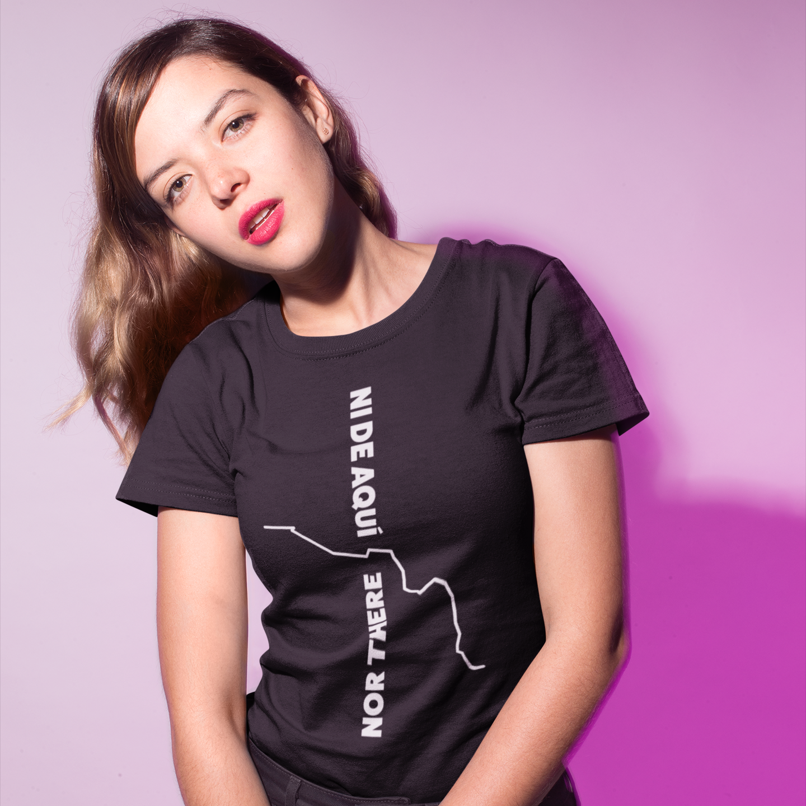
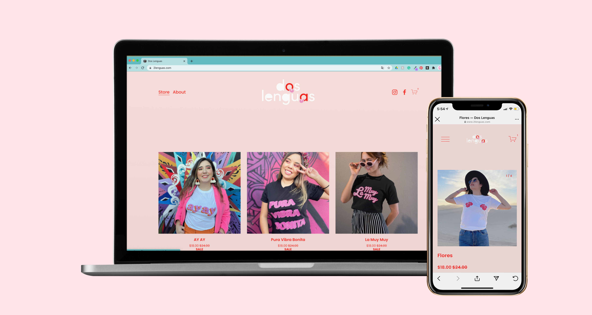
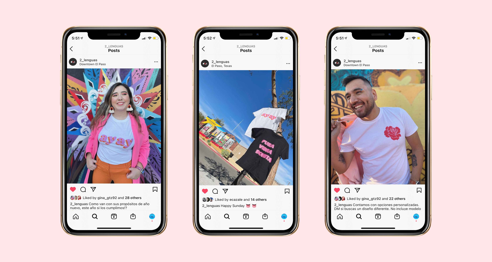
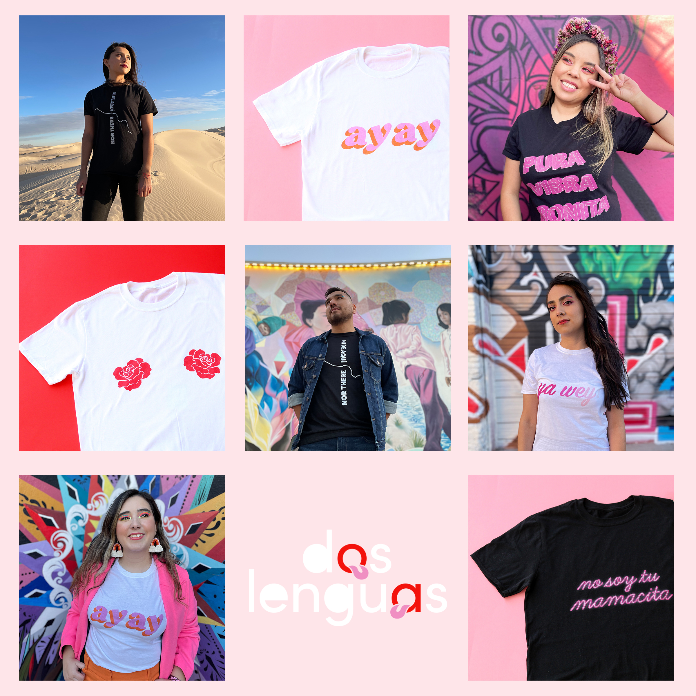
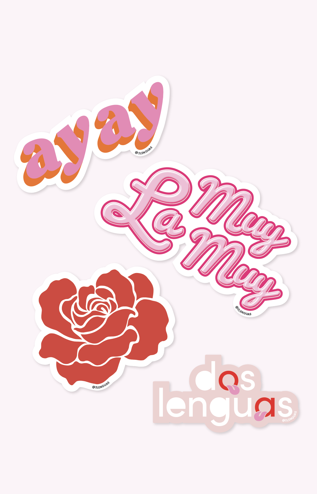

The brand Dos Lenguas was created as an outlet for expressing solidarity for all those who belong to more than one place. This brand expresses what it means to be part of two places, two cultures, and two languages.
Our passion for graphic design, art, architecture, and our community, led us to create these designs that reflect the peculiar mixed culture in which we live.
Cofounded with Estephania Cazale
Roles: Founder, Designer, Creative Director, Brand Management, Content Development
2020